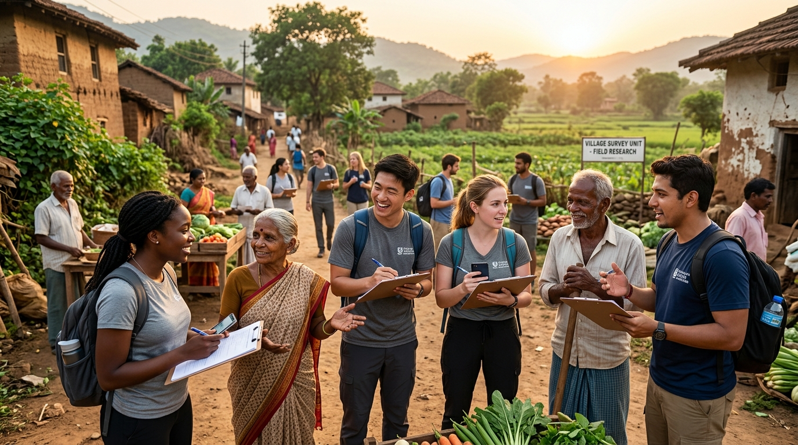
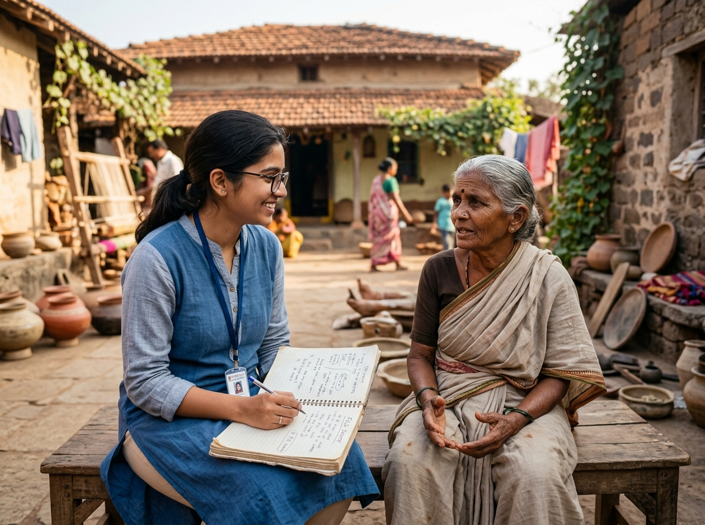
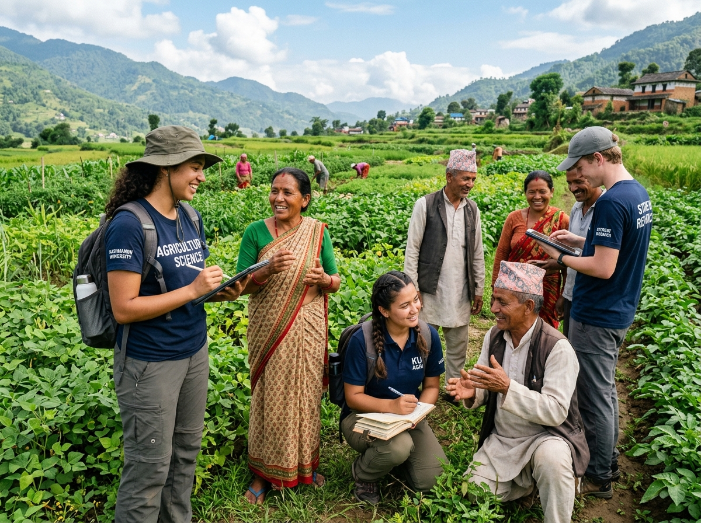
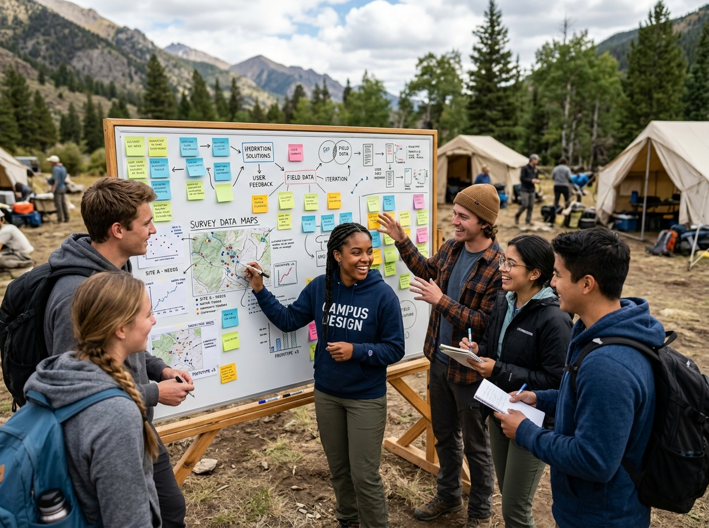

Region X:
Field Immersion & Ground Discovery
Step beyond classroom walls and into real communities. Region X is our signature experiential learning program where students travel to field locations, observe real environments, interview everyday people, execute structured surveys, and engineer human-centered solutions.
50+
Field Expeditions
1,500+
Locals Interviewed
4,200+
Surveys Recorded
90+
Prototypes Built
Why Region X?
Learning Realities Where They Happen
Textbooks and artificial lab problems can only take learning so far. Real innovation starts when students step into actual environments — rural agricultural zones, local craft clusters, village marketplaces, and urban transit hubs.
Through Region X, student cohorts spend days in target locations actively listening to residents, recording daily workflows, mapping pain points, and surveying community needs.
Direct interviews with farmers, artisans, small business owners, and families
Structured qualitative and quantitative survey collection using mobile & field kits
Transforming raw field observations into actionable engineering & design briefs

Live Interview Session
Students listening to a local potter discuss supply chain challenges during a field visit.
Field Survey Tool
Empathetic Human-Centric Research
How Region X Field Visits Work
Our structured 4-pillar methodology turns field exploration into rigorous problem discovery and impactful solution building.
1. Field Exploration
Cohort teams visit target ecosystems — farms, village squares, water points, and micro-workshops — to observe raw, unvarnished daily life.
2. Interviews & Surveys
Students engage in face-to-face qualitative conversations and quantitative mobile surveys to hear authentic concerns directly from stakeholders.
3. Pain-Point Mapping
Gathered field data is clustered into user journey maps and root cause diagrams at base camp to identify real engineering challenges.
4. Co-Creation
Students return to innovation labs to design low-cost physical and digital prototypes, testing them back with the surveyed community.
Region X In Action
Snapshot of student field visits, live survey collection, and on-ground problem discovery.

Agricultural Yield & Soil Surveys
Students recording crop loss patterns directly in farming fields using digital tablets.
Village Artisans & Local Business Owners
Empathetic 1-on-1 interviews capturing human stories and practical constraints.

Survey Data Synthesis
Organizing sticky notes and field survey statistics into actionable project briefs.
The Region X Expedition Timeline
Pre-Visit Research & Questionnaire Design
Students research target demographics and design structured survey forms and empathy guides.
Location Immersion & Field Walks
Arriving at the field site, establishing rapport with local leaders, and observing daily life.
Live Stakeholder Interviews & Surveys
Conducting 1-on-1 interviews with locals, surveying pain points, and recording audio/photo logs.
Data Clustering & Rapid Prototyping
Filtering survey responses into key problems and rapidly assembling initial working solutions.
Ready to Experience Region X?
Bring on-ground field immersion, human-centric surveys, and real-world problem solving to your institution.